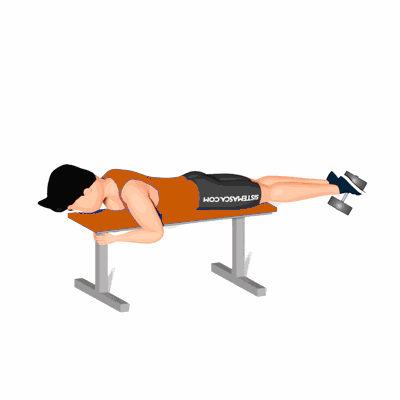

Flexão de Perna com Halteres

Exercício para fortalecimento e hipertrofia da região das coxas, com enfoque nos músculos posteriores de coxa, bíceps femorais.
Ficha Técnica
Tipo: Musculação
Grupo Muscular: Perna
Aparelho: Nenhum
Músculos: Nenhum
Como realizar
- Deite-se em cima de um banco plano, com o peito para baixo;
- Peça a um companheiro de treino ou professor que lhe coloque um halter entre os pés, que ficarão sempre juntos;
- Segure-se bem ao banco com as mãos;
- Com as pernas completamente estendidas, flexione os joelhos e leve os pés em direção aos glúteos até estes ficarem numa posição vertical;
- Depois regresse à posição inicial e repita os movimentos.
 RC STORE
RC STORE